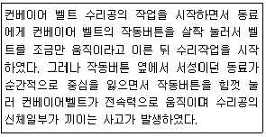
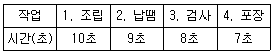

인간공학기사 (2018-08-19 기출문제)
1과목: 인간공학개론
1. 시스템 평가 척도의 요건에 대한 설명으로 적절하지 않은 것은?
- 신뢰성:평가를 반복할 경우 일정한 결과를 얻을 수 있다.
- 실제성:현실성을 가지며, 실질적으로 이용하기 쉽다.
- 타당성:측정하고자 하는 평가 척도가 시스템의 목표를 반영한다.
- 무오염성:측정하고자 하는 변수 이외의 외적 변수에 영향을 받는다.
(정답률: 88%)

2. 광도(luminous intensity)를 측정하는 단위는?
- lux
- candela
- lummen
- lambert
(정답률: 52%)
3. 정신 작업 부하를 측정하는 척도로 적합하지 않은 것은?
- 심박수
- Cooper-Harper 축척(scale)
- 주임무(primary task) 수행에 소요된 시간
- 부임무(secondary task) 수행에 소요된 시간
(정답률: 76%)
4. 기계가 인간보다 더 우수한 기능이 아닌 것은? (단, 인공지능은 제외한다.)
- 자극에 대하여 연역적으로 추리한다.
- 이상하거나 예기치 못한 사건들을 감지한다.
- 장시간에 걸쳐 신뢰성 있는 작업을 수행한다.
- 암호화된 정보를 신속하고, 정확하게 회수한다.
(정답률: 81%)
5. . 버스의 의자 앞뒤 사이의 간격을 설계할 때 적용하는 인체치수 적용원리로 가장 적절한 것은?
- 평균치 원리
- 최대치 원리
- 최소치 원리
- 조절식 원리
(정답률: 81%)
6. 제어장치와 표시장치의 일반적인 설계원칙이 아닌 것은?
- 눈금이 움직이는 동침형 표시장치를 우선 적용한다.
- 눈금을 조절 노브와 같은 방향으로 회전시킨다.
- 눈금 수치는 왼쪽에서 오른쪽으로 돌릴 때 증가하도록 한다.
- 증가량을 설정할 때 제어장치를 시계방향으로 돌리도록 한다.
(정답률: 79%)
7. 촉각적 표시장치에 대한 설명으로 맞는 것은?
- 시각 및 청각 표시장치를 대체하는 장치로 사용할 수 없다.
- 3점 문턱값(Three-Point Threshold)을 척도로 사용한다.
- 세밀한 식별이 필요한 경우 손가락보다 손바닥 사용을 유도해야 한다.
- 촉감은 피부온도가 낮아지면 나빠지므로, 저온환경에서 촉감 표시장치를 사용할 때는 아주 주의하여야 한다.
(정답률: 87%)
8. 소리의 차폐효과(masking)에 관한 설명으로 맞는 것은?
- 수파수별로 같은 소리의 크기를 표시한 개념
- 하나의 소리가 다른 소리의 판별에 방해를 주는 현상
- 내이(inner ear)의 달팽이관(Cochlea) 안에 있는 섬모(fiber)(가 소리의 주파수에 따라 민감하게 반응하는 현상
- 하나의 소리의 크기가 다른 소리에 비해 몇 배나 크게(또는 작게) 느껴지는 지를 기준으로 소리의 크기를 표시하는 개념
(정답률: 91%)
9. 정상조명하에서 100m 거리에서 볼 수 있는 원형 시계탑을 설계하고자 한다. 시계의 눈금단위를 1분 간격으로 표시하고자 할 때 원형문자판의 직경은 약 몇 cm인가?
- 250
- 300
- 350
- 400
(정답률: 53%)
10. 시각의 기능에 대한 설명으로 틀린 것은?
- 밤에는 빨강색보다는 초록색이나 파란색이 잘 보인다.
- 눈이 초점을 맞출 수 있는 가장 가까운 거리를 근점이라 한다.
- 근시인 사람은 수정체가 얇아져 가까운 물체를 제대로 볼 수 없다.
- 간상체나 원추체가 빛을 흡수하면 화학반응이 일어나 뇌로 전달된다.
(정답률: 80%)
11. 작업환경 측정법이나 소음 규제법에서 사용되는 음의 강도의 척도는?
- dB(A)
- dB(B)
- Sone
- Phpn
(정답률: 84%)
12. 구성요소 배치의 원칙에 관한 기술 중 틀린 것은?
- 사용빈도를 고려하여 배치한다.
- 작업공간의 활용을 고려하여 배치한다.
- 기능적으로 관련된 구성요소들을 한데 모아서 배치한다.
- 시스템의 목적을 달성하는 데 중요한 정도를 고려하여 배치한다.
(정답률: 56%)
13. 정보이론의 응용과 가장 거리가 먼 것은? (문제 오류로 실제 시험에서는 1, 2번이 정답처리 되었습니다. 여기서는 1번을 누르면 정답 처리 됩니다.)
- 정보이론에 따르면 자극의 수와 반응시간은 무관하다.
- 주의를 번갈아가며 두 가지 이상의 일을 돌보아야 하는 것을 시배분이라 한다.
- 단일 차원의 자극에서 확인할 수 있는 범위는 Magic number 7±2로 제시되었다.
- 선택반응시간은 자극 정보량의 선형함수임을 나타내는 것이 Hick-Hyman 법칙이다.
(정답률: 86%)
14. 회전운동을 하는 조종 장치의 레버를 25° 움직였을 때 표시장치의 커서는 1.5cm 이동하였다. 레버의 길이가 15cm일 때 이 조종 장치의 C/R비는 약 얼마인가?
- 2.09
- 3.49
- 4.36
- 5.23
(정답률: 68%)
15. 인체측정에 관한 설명으로 틀린 것은?
- 활동 중인 신체의 자세를 측정한 것을 기능적 치수라 한다.
- 일반적으로 구조적 치수는 나이, 성별, 인종에 따라 다르게 나타난다.
- 인간-기계 시스템의 설계에서는 구조적 치수만을 활용하여야 한다.
- 표준자세에서 움직이지 않는 상태를 인체측정기로 측정한 측정치를 구조적 치수라 한다.
(정답률: 84%)
16. Wickens의 인간의 정보처리체계(human information processing) 모형에 의하면 외부자극으로 인한 정보가 처리될 때, 인간의 주의집중(attention resources)이 관여하지 않는 것은?
- 인식(perception)
- 감각저장(sensory storage)
- 작업기억(working memory)
- 장기기억(long-term memory)
(정답률: 44%)
17. 인간공학의 정보이론에 있어 1bit에 관한 설명으로 가장 적절한 것은?
- 초당 최대 정보 기억 용량이다.
- 정보 저장 및 회송(recall)에 필요한 시간이다.
- 2개의 대안 중 하나가 명시되었을 때 얻어지는 정보량이다.
- 일시에 보낼 수 있는 정보전잘 용량의 크기로서 통신 채널의 Capacity를 의미한다.
(정답률: 80%)
18. 인간-기계 시스템의 설계원칙으로 적절하지 않은 것은?
- 인체의 특성에 적합하여야 한다.
- 인간의 기계적 성능에 적합하여야 한다.
- 시스템의 동작은 인간의 예상과 일치되어야 한다.
- 단독의 기계를 배치하는 경우 기계의 성능을 우선적으로 고려하여야 한다.
(정답률: 85%)
19. 신호 및 정보 등의 경우 빛의 검출성에 따라서 신호, 경보 효과가 달라지는데, 빛의 검출성에 영향을 주는 인자에 해당되지 않는 것은?
- 색광
- 배경광
- 점멸속도
- 신호등 유리의 재질
(정답률: 84%)
20. 인간공학의 목적과 가장 거리가 먼 것은?
- 생상성 향상
- 안전성 향상
- 사용성 향상
- 인간기능 향상
(정답률: 57%)
2과목: 작업생리학
21. 신체부위를 움직이지 않으면서 고정된 물체에 힘을 가하는 상태의 근력을 의미하는 용어는?
- 등장성 근력(isotonie strength)
- 등척성 근력(isometric strength)
- 등속성 근력(isokinetic strength)
- 등관성 근력(sioinertial strength)
(정답률: 86%)
22. 어떤 들기 작업을 한 후 작업자의 배기를 3분간 수집한 후 60리터(liter)의 가스를 가스 분석기로 성분을 조사하였더니, 산소는 16%, 이산화탄소는 4%이었다. 분당 산소 소비량과 에너지가(價)를 구한 것으로 맞는 것은? (단, 공기 중 산소는 21%, 질소는 79%를 차지하고 있다.)
- 1.⑤3L/min, 5.265 kcal/min
- 1.⑤3L/min, 10.525 kcal/min
- 2.1⑤L/min, 5.265 kcal/min
- 2.1⑤L/min, 10.525 kcal/min
(정답률: 43%)
23. 휴식을 취할 때나 힘든 작업을 수행할 때 혈류량의 변화가 없는 기관은?
- 뼈
- 근육
- 소화기계
- 심장
(정답률: 54%)
24. 근육이 피로해질수록 근전도(EMG) 신호의 변화로 맞는 것은?
- 저주파 영역이 증가하고 진폭도 커진다.
- 저주파 영역이 감소하나 진폭은 커진다.
- 저주파 영역이 증가하나 증폭은 작아진다.
- 저주파 영역이 감소하고 진폭도 작아진다.
(정답률: 63%)
25. 척추를 구성하고 있는 뼈 가운데 요추의 수는 몇 개인가?
- 5개
- 6개
- 7개
- 8개
(정답률: 79%)
26. 진동방지 대책으로 적합하지 않은 것은?
- 진동의 강도를 일정하게 유지한다.
- 작업자는 방진 장갑을 착용하도록 한다.
- 공장의 진동 발생원을 기계적으로 격리한다.
- 진동 발생원을 작동시키기 위하여 원격제어를 사용한다.
(정답률: 80%)
27. 정신적 부하 측정치로 가장 거리가 먼 것은?
- 뇌전도
- 부정맥지수
- 근전도
- 점멸융합수파수
(정답률: 71%)
28. 환경요소와 관련한 복합지수 중 열과 관련된 것이 아닌 것은?
- 긴장지수(strain index)
- 습건지수(oxford index)
- 열압박지수(heat stress index)
- 유효온도(effective temperature)
(정답률: 80%)
29. 육체적인 작업을 수행할 때 생리적 변화에 대한 설명으로 틀린 것은?
- 작업부하가 지속적으로 커지면 산소 흡입량이 증가할 수 있다.
- 정적인 작업의 부하가 커지면 심박출량과 심박수가 감소한다.
- 교대작업을 하는 작업자는 수면 부족, 식용부진 등을 일으킬 수 있다.
- 서서 하는 작업이 앉아서 하는 작업보다 심혈관계의 순환이 활발해질 수 있다.
(정답률: 74%)
30. 기초대사량(BMR)에 관한 설명으로 틀린 것은?
- 기초대사량은 개인차가 심하여 나이에 따라 달라진다.
- 일상생활을 하는 데 필요한 단위 시간당 에너지양이다.
- 일반적으로 체격이 크고 젊은 남성의 기초대사량이 크다.
- 공복상태로 쾌적한 온도에서 신체적 휴식을 취하는 엄격한 조건에서 측정한다.
(정답률: 62%)
31. 신체의 지지와 보호 및 조혈 기능을 담당하는 것은?
- 근육계
- 순환계
- 신경계
- 골격계
(정답률: 83%)
32. 진동에 의한 영향으로 틀린 것은?
- 심박수가 감소한다.
- 약간의 과도(過度) 호흡이 일어난다.
- 장시간 노출 시 근육 긴장을 증가시킨다.
- 혈액이나 내분비의 화학적 성질이 변하지 않는다.
(정답률: 74%)
33. 실내표면의 추천 반사율이 높은 곳에서 낮은 순으로 맞게 나열된 것은?
- 창문 발(blind)-사무실 천정-사무용 기기-사무실 바닥
- 사무실 바닥-사무실 천정-창문 발(blind)-사무실 바닥
- 사무실 천정-창문 발(blind)-사무용 기기-사무실 바닥
- 사무용 기기-사무실 바닥-사무실 천정-창문 발(blind)
(정답률: 86%)
34. 육체적 작업을 위하여 휴식시간을 산정할 때 가장 관련이 깊은 척도는?
- 눈 깜빡임 수(blink rate)
- 점멸 융합 주파수(flicker test)
- 부정맥 지수(cardiac arrhythmia)
- 에너지 대사율(relative metabolic rate)
(정답률: 73%)
35. 음식물을 섭취하여 기계적인 일과 열로 잔환하는 화학적인 과정을 무엇이라 하는가?
- 에너지가
- 산소 부채
- 신진대사
- 에너지 소비량
(정답률: 72%)
36. 작업장에서 8시간 동안 85dB(A)로 2시간, 90dB(A)로 3시간, 95dB(A)로 3시간 소음에 노출되었을 경우 소음노출지수는? (단, 국내의 관련 규정을 따른다.)
- 0.975
- 1.125
- 1.25
- 1.5
(정답률: 46%)
37. 근육의 수추에 대한 설명으로 틀린 것은?
- 근육이 최대로 수축할 때 Z선이 A대에 맞닿는다.
- 근섬유(muscle fiber)가 수축하면 I대 및 H대가 짧아진다.
- 근육이 수축할 때 근세사(myofilament)의 원래 길이는 변하지 않는다.
- 근육이 수축하면 굵은 근세사(myofilament)가 가는 근세사 사이로 미끄러져 들어간다.
(정답률: 59%)
38. 교대작업에 대한 설명으로 틀린 것은?
- 일반적으로 야간 근무자의 사고 발생률이 높다.
- 교대작업은 생산설비의 가동률을 높이고자 하는 제도 중의 하나이다.
- 교대작업 주기를 자주 바꿔주는 것이 근무자의 건강에 도움이된다.
- 상대적으로 가벼운 작업을 야간 근무조에 배치하고 업무 내용을 탄력적으로 조정한다.
(정답률: 83%)
39. 생체역할 용어에 대한 설명으로 틀린 것은?
- 힘을 3소요는 크기, 방향, 작용점이다.
- 벡터(vector)는 크기와 방향을 갖는 양이다.
- 스킬라(scglgr)는 벡터량과 유사하나 방향이 다르다.
- 모멘트(moment)란 변형시킬 수 있거나 회전시킬 수 있는 관절에 가해지는 힘이다.
(정답률: 70%)
40. 눈으로 볼 수 있는 빛의 가시광선 파장에 속하는 것은?
- 250nm
- 600nm
- 1000nm
- 1200nm
(정답률: 66%)
3과목: 산업심리학 및 관계법규
41. 재해예방의 4원칙에 해당되지 않는 것은?
- 예방 가능의 원칙
- 손실 우연의 원칙
- 보상 분배의 원칙
- 대책 선정의 원칙
(정답률: 88%)
42. 원자력발전소 주제어실의 직부는 4명의 운전원으로 구성된 근무조에 수행되고, 이들의 직무 간에는 서로 영향을 끼치게 된다. 근무조원 중 1차 계통의 운전원 A의 기초 인간실수확률 HEP Prob{A} = 0.001일 때, 운전원 B의 직무실패를 조건으로 한 운전원 A의 직무실패확률은? (단, THERP 분석법을 사용한다.)
- 0.151
- 0.161
- 0.171
- 0.181
(정답률: 32%)
43. 작업자의 인지과정을 고려한 휴먼 에러의 정성적 분석방법이 아닌 것은?
- 연쇄적 오류모형
- GEMS(Generic Error Modeling System)
- PHECA(Potential Human Error Cause Analysis)
- CREMA(Cognitive Reliability Error Analysis Method)
(정답률: 49%)
44. 손과 발 등의 동작시간과 이동시간이 표적의 크기와 표적까지의 거리에 따라 결정된다는 법칙은?
- Fitts의 법칙
- Alderfer의 법칙
- Rasmussen의 법칙
- Hicks-Hymann의 법칙
(정답률: 86%)
45. 안전 수단을 생략하는 원인으로 적합하지 않는 것은?
- 감정
- 의식과잉
- 피로
- 주변의 영향
(정답률: 54%)
46. 많은 동작들이 바뀌는 신호등이나 청각적 경계적 신호와 같은 외부자극을 계기로 하여 시작된다. 자극이 있은 후 동작을 개시 할 때까지 걸리는 시간은 무엇이라 하는가?
- 동작시간
- 반응시간
- 감지시간
- 정보처리 시간
(정답률: 82%)
47. 피로의 생리학적(physiological) 측정방법과 거리가 먼 것은?
- 뇌파 측정(EEG)
- 심점도 측정(ECG)
- 근전도 측정(EMG)
- 변별역치 측정(촉각계)
(정답률: 76%)
48. 통제적 집단행동 요소가 아닌 것은?
- 관습
- 유행
- 군중
- 제도적 행동
(정답률: 54%)
49. A상업장의 도수율이 2로 계산되었다면, 이에 대한 해석으로 가장 적절한 것은?
- 근로자 1000명달 1년 동안 발생한 재해자 수가 2명이다.
- 근로자 1000명달 1년간 발생한 사망자자 수가 2명이다.
- 연 근로시간 1000 시간당 발생한 근로손실일수가 2일이다.
- 연 근로시간 합계 100만인시(man-hour)당 2건의 재해가 발생하였다.
(정답률: 75%)
50. 제조물책임법에서 동일한 손해에 대하여 배상할 책임이 있는 사람이 최소한 몇 명 이상이어야 연대에하여 그 손해를 배상할 책임이 있는가?
- 2인 이상
- 4인 이상
- 6인 이상
- 8인 이상
(정답률: 73%)
51. 동기를 부여하는 방법이 아닌 것은?
- 상과 벌을 준다.
- 경쟁을 자제하게 한다.
- 근본이념을 인식시킨다.
- 동기부여의 최적수준을 유지한다.
(정답률: 86%)
52. 정서노동(emotional labor)의 정의를 가장 적절하게 설명한 것은?
- 스트레스가 심한 사람을 상대하는 노동
- 정서적으로 우울 성향이 높은 사람을 상대하는 노동
- 조직에 부정적 정서를 갖고 있는 종업원들의 노동
- 자신이 느끼는 원래 정서와는 다른 정서를 고객에게 의무적으로 표현해야 하는 노동
(정답률: 86%)
53. 다음은 인적 오류가 발생한 사례이다. Swain Guttman이 사용한 개별적 독립행동에 의한 오류 중 어느 것에 해당하는가?

- 시간 오류(timing error)
- 순서 오류(sequence error)
- 부작위 오류(omission error)
- 작위 오류(commission error)
(정답률: 80%)
54. 재해 발생원인 중 불안전한 상태에 해당하는 것은?
- 보호구의 결함
- 불안전한 조장
- 안전장치 기능의 제거
- 불안전한 자세 및 위치
(정답률: 63%)
55. 호손(Hawthorme) 연구의 내용으로 맞는 것은?
- 종업원의 이적률을 결정하는 중요한 요인은 임금수준이다.
- 호손 연구의 결과는 맥그리거(McGreger)의 XY 이론 중 X 이론을 지지한다.
- 작업자의 작업능률은 물리적인 작업조건보다는 인간관계의 영향을 더 많이 받는다.
- 종업원의 높은 임금 수준이나 좋은 작업조건 등은 개인의 직무에 대한 불만족을 방지하고 직무 동기 수준을 높인다.
(정답률: 82%)
56. 전술적(tacticaal) 에러, 전략적(poerational) 에러, 그리고 관리구조(organizational) 결함 등의 용어를 사용하여 사고연쇄반응에 대한 이론을 제안한 사람은?
- 버드(Bird)
- 아담스(Adams)
- 웨버(Weaver)
- 하인리히(Heinrich)
(정답률: 59%)
57. 스트레스 수준과 수행(성능) 사이의 일반적 관계는?
- W형
- 뒤집힌 U형
- U자형
- 증가하는 직선형
(정답률: 81%)
58. 리더쉽 이론 중 관리 그리드 이론에서 인간에 대한 관심이 높은 유형으로만 나열된 것은?
- 인기형, 타협형
- 인기형, 이상형
- 이상형, 타협형
- 이상형, 과업형
(정답률: 80%)
59. 미사일을 탐지하는 경보 시스템이 있다. 조작자는 한 시간마다 일련의 스위치를 작동해야 하는 데 휴먼에러 확률(HEP)은 0.01이다. 2시간에서 5시간까지의 인간 신뢰도는 약 얼마인가?
- 0.9412
- 0.9510
- 0.9606
- 0.9703
(정답률: 48%)
60. 게스탈트 지각원리에 해당하지 않은 것은?
- 근접성의 원리
- 유사성의 원리
- 부분우세의 원리
- 대칭성 원리
(정답률: 66%)
4과목: 근골격계질환 예방을 위한 작업관리
61. 어느 회사의 컨베이어 라인에서 작업순서가 다음 표의 번호와 같이 구성되어 있을 때, 설명 중 맞는 것은?

- 공정 손실은 15%이다.
- 애로 작업은 검사작업이다.
- 라인의 주기 시간은 7초이다.
- 라인의 시간당 생산량은 6개이다.
(정답률: 68%)
62. 1시간을 TMU(Time Measurement Unit)로 환산한 것은?
- 0.036 TMU
- 27.8 TMU
- 1667 TMU
- 100000 TMU
(정답률: 59%)
63. 들기 작업의 안전작업 범위 중 주의 작업 범위에 해당하는 것은?
- 팔을 몸체에 붙이고 손목만 위, 아래로 움직일 수 있는 범위
- 팔은 완전히 뻗쳐서 손을 어깨까지 올리고 허벅지까지 내리는 범위
- 물체를 놓치기 쉽거나 허리가 안전하게 그 무게를 지탱할 수 있는 범위
- 팔꿈치를 몸의 측면에 붙이고 손이 어깨높이에서 허벅지 부위까지 닿을 수 있는 범위
(정답률: 56%)
64. 근골격계 질환의 예방원리에 관한 설명으로 가장 적절한 것은?
- 예방이 최선의 정책이다.
- 작업자의 정신적 특징 등을 고려하여 작업장을 설계한다.
- 공학적 개선을 통해 해결하기 어려운 경우에는 그 공정을 중단한다.
- 사업장 근골격계 질환의 예방정책에 노사가 협의하면 작업자의 참여는 중요하지 않다.
(정답률: 75%)
65. 작업관리의 궁극적인 목적인 생산성 향상을 위한 대상 항목이 아닌 것은?
- 노동
- 기계
- 재료
- 세금
(정답률: 85%)
66. NIOSH의 들기작업 지침에서 들기지수 값이 1이 되는 경우 대상 중량물의 무게는 얼마인가?
- 18kg
- 21kg
- 23kg
- 25kg
(정답률: 74%)
67. 작업연구의 내용과 가장 관계가 먼 것은?
- 재고량 관리
- 표준시간의 산정
- 최선의 작업방법 개발과 표준화
- 최적 작업방법에 의한 작업자 훈련
(정답률: 83%)
68. 배치설비를 분석하는 데 있어 가장 필요한 것은?
- 서블릭
- 유통선도
- 관리도
- 간트차트
(정답률: 58%)
69. 다음 중 작업 대상물의 품질 확인이나 수량의 조사, 검사 등에 사용되는 공정도 기호에 해당하는 것은?
- ○
- □
- △
- ⇨
(정답률: 75%)
70. 작업개선에 따른 대안을 도출하기 위한 사항과 가장 거리가 먼 것은?
- 다른 사람에게 열심히 탐문한다.
- 유사한 문제로부터 아이디어를 얻도록 한다.
- 현재의 작업방법을 완전히 잊어버리도록 한다.
- 대안 탐색 시에는 양보다 질에 우선순위를 둔다.
(정답률: 56%)
71. 근골격계 질환 중 손과 손목에 관련된 질환으로 분류되지 않는 것은?
- 결절종(Ganglion)
- 수근관증후군(Carpal Tunnel Syndrome)
- 회전근개증후군(Rotator Cuff Syndrome)
- 드퀘르뱅건초염(Dequervain's Syndrome)
(정답률: 70%)
72. 근골격계질환 발생의 주요한 작업 위험 요인으로 분류하기에 적절하지 않는 것은?
- 부적절한 휴식
- 과도한 반복 작업
- 작업 중 과도한 힘의 사용
- 작업 중 적절한 스트레칭의 부족
(정답률: 61%)
73. 근골격계 질환 예방ㆍ관리 프로그램의 실행을 위한 보건관리자의 역할과 가장 밀접한 관계가 있는 것은?
- 기본 정책을 수립하여 근로자에게 알려야 한다.
- 예방ㆍ관리 프로그램의 수립 및 수정에 관한 사항을 결정한다.
- 예방ㆍ관리 프로그램의 개발ㆍ평가에 적극적으로 참여하고 준수한다.
- 주기적인 근로자 면담 등을 통하여 근골격계 질환 증상 호소자를 조기에 발견하는 일을 한다.
(정답률: 69%)
74. 유해요인의 공학적 개선사례로 볼 수 없는 것은?
- 로봇을 도입하여 수작업을 자동화하였다.
- 중량물 작업 개선을 위하여 호이스트를 도입하였다.
- 작업량 조정을 위하여 컨베이어의 속도를 재설정하였다.
- 작업피로감소를 위하여 바닥을 부드러운 재질로 교체하였다.
(정답률: 78%)
75. 신체 사용에 관한 동작경제 원칙으로 틀린 것은?
- 두 손은 순차적으로 동작하도록 한다.
- 두 팔의 동작은 서로 반대방향에서 대칭적으로 움직이도록 한다.
- 손과 신체의 동작은 작업을 원만하게 처리할 수 있는 범위 내에서 가장 낮은 동작등급을 사용한다.
- 가능한 관성을 이용하여 작업을 하되, 작업자가 관성을 억제해야 하는 경우에는 발생하는 관성을 최소한으로 줄인다.
(정답률: 65%)
76. 정미시간이 0.177분인 작업을 여유율 10%에서 외경법으로 계산하면 표준시간이 0.195분이 된다. 이를 8시간 기준으로 계산하면 여유시간은 총 44분이 된다. 같은 작업을 내경법으로 계산할 경우 8시간 기준으로 총 여유시간은 약 몇 분이 되겠는가? (단, 여유율은 외경법과 동일하다.)
- 12분
- 24분
- 48분
- 60분
(정답률: 39%)
77. 작업측정에 관한 설명으로 틀린 내용은?
- 정미시간은 반복생산에 요구되는 여유시간을 포함한다.
- 인적 여유는 생리적 욕구에 의해 작업이 지연되는 시간을 포함한다.
- 레이팅은 측정 작업 시간을 정상작업 시간으로 보정하는 과정이다.
- TV조립공정과 같이 짧은 주기의 작업은 비디오 촬영에 의한 시간연구법이 좋다.
(정답률: 51%)
78. 워크샘플링 방법 중 관측을 등간격 시점마다 행하는 것은?
- 랜덤 샘플링
- 층별 비례 샘플링
- 체계적 워크샘플링
- 퍼포먼스 워크샘플링
(정답률: 62%)
79. OQAS에 대한 설명이 아닌 것은? (문제 오류로 실제 시험에서는 2, 3번이 정답처리 되었습니다. 여기서는 2번을 누르면 정답 처리 됩니다.)
- 핀란드에서 개발되었다.
- 중량물의 취급은 포함하지 않는다.
- 정밀한 작업자세 분석은 포함하지 않는다.
- 작업자세를 평가 또는 분석하는 checkist이다.
(정답률: 77%)
80. 문제분석을 위한 기법 중 원과 직선을 이용하여 아이디어 문제, 개념 등을 개괄적으로 빠르게 설정할 수 있도록 도와주는 연연적 추론 기법에 해당하는 것은?
- 공정도(process chart)
- 마인트 맵핑(mind maping)
- 파레토 차트(pareto chart)
- 특성요인도(cause and effect diagram)
(정답률: 67%)